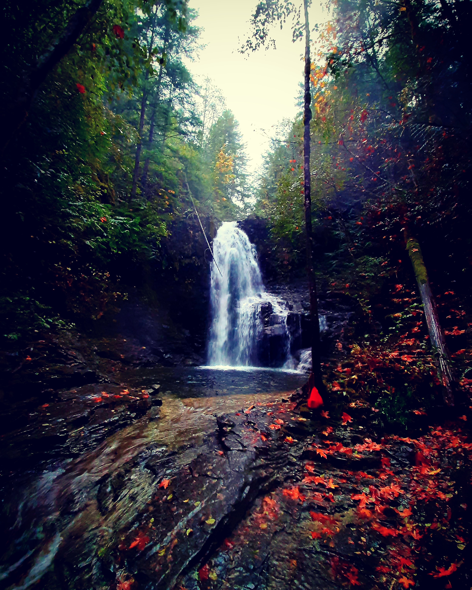

The Waterfalls are located about a 10-minute drive from Sproat Lake, then about a 15-minute hike down a pretty steep hill. Absolute peace when you arrive there, completely disconnected from the world. This photo was taken at the beginning of October this year. There is a covered sign where the trail begins, with a map attached so you can find the Waterfalls.
Taylor River is my favorite spot to go Oosimch. This location is right between the Port Alberni Highway and Tofino, about 30-minutes outside of Port. The water is crystal clear year-round, probably because it’s cold all the time. We’ve never had to share the river with anyone, and it’s pretty safe to have a small fire by the river.